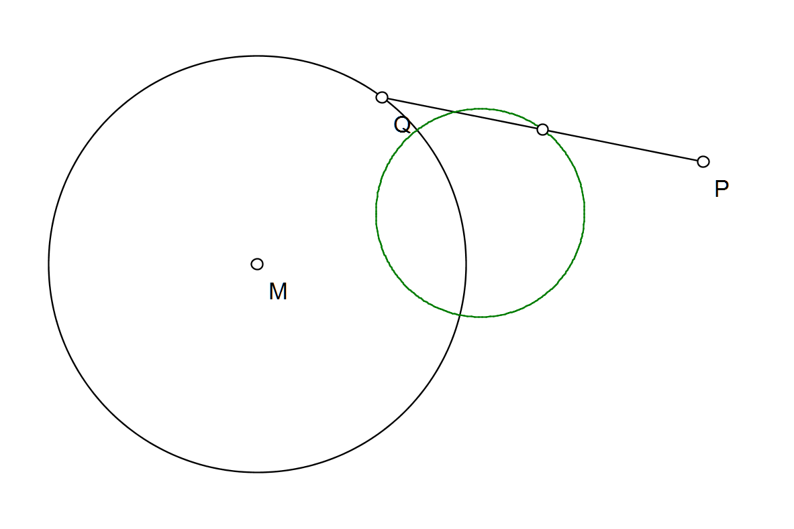
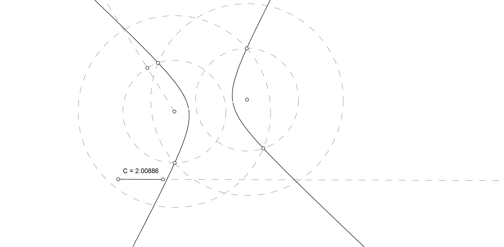
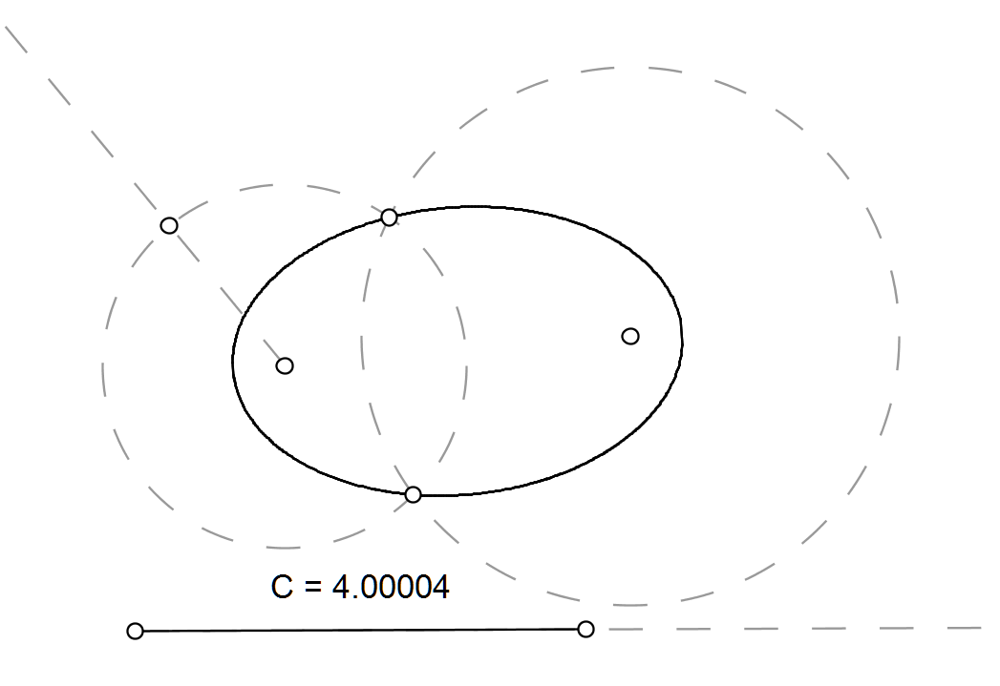
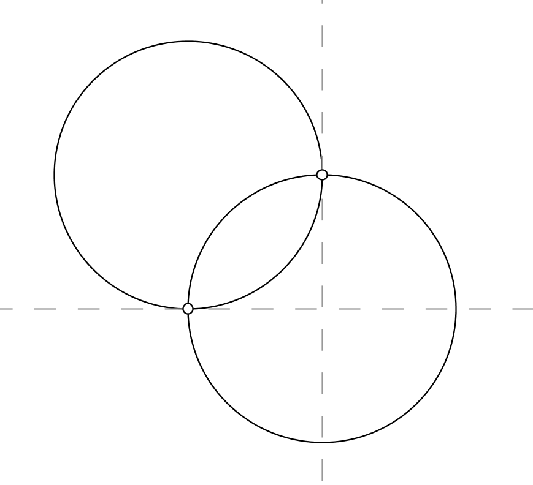

Gegeven een cirkel met middelpunt M, het punt P dat niet op de cirkel ligt en het punt Q dat wel op de cirkel ligt. Wat is de meetkundige plaats van het midden van het lijnstuk PQ als Q beweegt over de cirkel?
Gegeven is het lijnstuk AB. Wat is de meetkundige plaats van de punten P waarbij de hoek APB rechthoekig is? Teken deze meetkundige plaats met het werktuig "volg punt automatisch".
Een driehoek ABC is rechthoekig in A. Een veranderlijke rechte a, evenwijdig met AB, snijdt de zijden AC en BC respectievelijk in E en D. Bepaal de meetkundige plaats van het snijpunt S van AD en BE.
Gegeven zijn de loodrechte rechten k en l, het punt A op k en P op l. De rechte r staat in P loodrecht op de rechte PA en snijdt de rechte k in punt B. Op deze rechte r neemt men het punt C zodanig dat P het midden is van het lijnstuk BC. Wat is de meetkundige plaats van C als P beweegt?
Gegeven zijn de punten A en B. Bepaal de meetkundige plaats van de punten D zodat de afstand tussen de punten B en D het dubbel is van de afstand tussen A en D (d(B,D)=2*d(A,D)). (hint: gebruik een cirkel met vaste straal gelijk aan 2*d(A,D)). Teken deze meetkundige plaats met het werktuig "volg punt automatisch".
Gegeven de cirkel c, het punt A op die cirkel en de rechte m. Teken het punt D op m. De rechte AD snijdt de cirkel c in het punt C. Teken het punt P op de rechte AD zodat de d(D,C)=d(A,P). Wat is de meetkundige plaats van P?
Gegeven de rechthoek ABCD. Kiest een punt X op de cirkel c met middelpunt A door B. Bepaal de meetkundige plaats van het snijpunt van de rechte XD en de middelloodlijn van het lijnstuk XB.
Een hyperbool is de meetkundige plaats van punten waarvoor het verschil van de afstanden tot twee gekozen punten, de brandpunten, een constante waarde heeft. Construeer een hyperbool.
Een ellips is de meetkundige plaats van punten waarvoor de som van de afstanden tot twee gekozen punten, de brandpunten, een constante waarde heeft. Construeer een hyperbool.
Twee cirkels snijden elkaar orthogonaal als in de snijpunten de raaklijnen aan beide cirkels loodrecht op elkaar staan. Teken zo'n paar orthogonale cirkels.
Gegeven zijn drie punten a, b en c die op een rechte liggen, waarbij c tussen a en b ligt. Bepaal de meetkundige plaats van de punten p, waarvoor de cirkel C1 doorheen a, c en p de cirkel C2 doorheen p, c en b elkaar orthogonaal snijden (zie vorige oefening).
Gegeven twee snijdende rechten m en n en een punt P dat niet op die rechten ligt. Teken een cirkel die door P gaat en raakt aan m en n.
Op een blad papier staat een cirkel met daarin een punt P getekend. Vouw het blad zodat de cirkel door P gaat. Leg het blad weer plat en vouw het opnieuw volgens een andere richting. Herhaal deze operatie minstens 25 keer. Als je voldoende keren gevouwen hebt, verschijnen de vouwen als de raaklijnen aan een meetkundige figuur.
Simuleer dit plooien en openvouwen in P.e.L. en teken de gevraagde meetkundige plaats. Let op: als je het werktuig "volg rechte of punt" gebruikt voor het volgen van een rechte, tekent P.e.L. de kromme die "omhuld" wordt door de rechten (dus de rechten zijn raaklijnen aan de kromme). Wat gebeurt er als P samenvalt met het middelpunt van de cirkel? Wat als P buiten de cirkel valt?